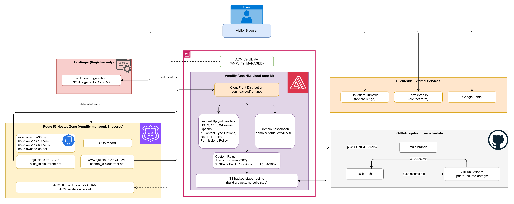

Static Website Hosting Architecture on AWS Amplify
Deployed this very portfolio site using AWS Amplify Hosting, with DNS delegated from a Hostinger-registered domain to a Route 53 hosted zone, CloudFront CDN, ACM-managed TLS, and GitHub-driven CI/CD.
Overview
Designed and deployed the hosting architecture for this portfolio website (rijul.cloud) using AWS Amplify. The domain is registered with Hostinger but DNS resolution is fully delegated to an Amplify-managed Route 53 hosted zone, which routes both the apex and www subdomain to an Amplify-provisioned CloudFront distribution. TLS is handled via an Amplify-managed ACM certificate, and deployments are automated straight from GitHub on every push to main.
Description
The goal was a low-maintenance, secure, and fully automated static site deployment that needed zero servers to manage, while still supporting a custom domain purchased from a third-party registrar (Hostinger) rather than Route 53 directly.
- Domain was registered outside AWS, requiring a clean way to bring custom-domain HTTPS hosting under Amplify without manually managing DNS records.
- Needed strict security headers (HSTS, CSP, X-Frame-Options, etc.) applied at the edge without running a custom server.
- Wanted zero-touch deployments triggered directly by GitHub pushes, with no manual build/release steps.
Architecture

Key Challenges
- Reconciling a Hostinger-registered domain with AWS-native DNS, since Amplify custom domains rely on Route 53 or externally managed CNAME/ALIAS records.
- Handling the apex domain, since DNS spec disallows a CNAME at the zone apex - resolved via a Route 53 ALIAS record pointing at CloudFront.
- Ensuring the ACM certificate validation record and subdomain verification records stayed in sync across the delegated hosted zone.
- Keeping the resume PDF's "last updated" date in sync with content changes without manual edits.
Solution Highlights
- Delegated the Hostinger-registered rijul.cloud domain to AWS by switching its nameservers to the four
awsdns-*nameservers of an Amplify-provisioned Route 53 hosted zone. - Let Amplify auto-manage the hosted zone's apex ALIAS record and
wwwCNAME record, both pointing to the app's dedicated CloudFront distribution. - Attached an Amplify-managed ACM certificate for TLS, validated via a DNS CNAME record in the same hosted zone.
- Configured
customHttp.ymlto apply HSTS, CSP, X-Frame-Options, X-Content-Type-Options, Referrer-Policy, and Permissions-Policy headers at the CloudFront edge. - Added Amplify custom rules for an apex >>
www302 redirect and a SPA-style 404-to-index.htmlfallback for the custom 404 page. - Connected the Amplify app directly to the main branch of the GitHub repository so every push triggers an automatic build and deploy, with a separate GitHub Actions workflow auto-updating the resume's last-updated date on the qa branch.
Results & Impact
- Achieved a fully serverless, self-healing static hosting setup with no infrastructure to patch or scale.
- Automated HTTPS certificate issuance and renewal end-to-end via ACM + Route 53, with no manual cert management.
- Enforced strong security headers and CSP policy across every response without a custom origin server.
- Enabled true push-to-deploy CI/CD, eliminating manual release steps for every content update.
- Established a clean split between registrar (Hostinger) and DNS authority (Route 53), simplifying future domain changes.
Tech Stack
- AWS Amplify Hosting (S3-backed static hosting, custom rules, custom headers)
- Amazon CloudFront (Amplify-managed CDN distribution)
- Amazon Route 53 (Amplify-managed hosted zone, DNS delegation)
- AWS Certificate Manager (Amplify-managed TLS certificate)
- Hostinger (domain registrar)
- GitHub + GitHub Actions (CI/CD, automated resume date updates)
- Formspree & Cloudflare Turnstile (contact form backend and bot protection)